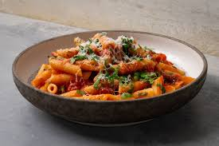

Arrabiata Pasta
Welcome to the ultimate guide for making **Arrabbiata pasta**! This bold, spicy Italian classic is perfect for when you’re craving big flavor with simple ingredients.
Follow this easy recipe to create a delicious plate of pasta tossed in a rich tomato sauce infused with garlic, olive oil, and fiery chili flakes—comforting, vibrant, and satisfying, with just the right amount of heat that everyone will love. 🍝🌶️

Ingredients
- 12 oz (340 g) dried pasta (penne or spaghetti)
- 2 tablespoons olive oil
- 3 cloves garlic, finely minced
- 1 teaspoon red chili flakes (adjust to taste)
- 1 ½ cups crushed tomatoes
- Salt, to taste
- Fresh parsley or basil, chopped (for garnish)
Instructions
- Bring a large pot of salted water to a boil and cook the pasta according to package instructions until al dente. Reserve ½ cup of pasta water, then drain.
- Heat olive oil in a large pan over medium heat. Add the minced garlic and sauté for 30–60 seconds until fragrant (do not brown).
- Add the red chili flakes and stir briefly to release their heat into the oil.
- Pour in the crushed tomatoes, season with salt, and let the sauce simmer for 10–15 minutes until slightly thickened.
- Add the cooked pasta to the sauce, tossing well to coat. Add a splash of reserved pasta water if needed.
- Remove from heat, garnish with fresh parsley or basil, and serve hot. Enjoy!